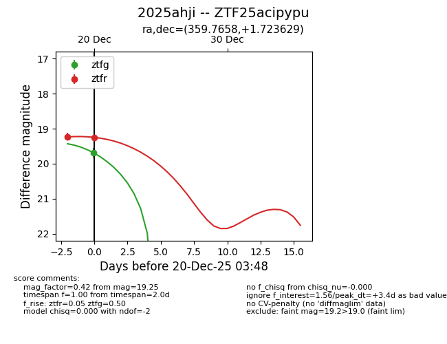
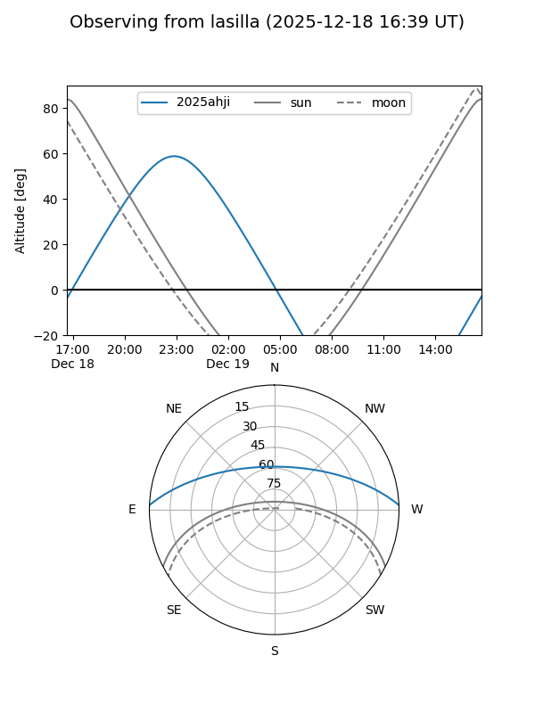
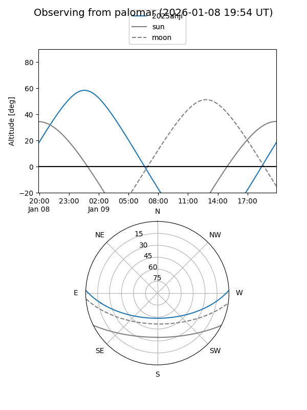

2025ahji
Target 2025ahji at 2025-12-22 15:01
Aliases and brokers:
FINK: fink-portal.org/ZTF25acipypu
Lasair: lasair-ztf.lsst.ac.uk/objects/ZTF25acipypu
ALeRCE: alerce.online/object/ZTF25acipypu
TNS: wis-tns.org/object/2025ahji
YSE: ziggy.ucolick.org/yse/transient_detail/2025ahji
alt names
ZTF25acipypu (ztf,fink_ztf)
2025ahji (tns,yse)
Coordinates:
equatorial (ra, dec) = 359.7658,+1.72363
equatorial (HMS+DMS) = 23:59:03.80,+01:43:25.07
galactic (l, b) = (97.2408,-58.51115)
Flags:
Photometry:
last ztfg=19.62, ztfr=19.03
2 ztfg, 3 ztfr detections
Lightcurve

Visibility


Additional plots